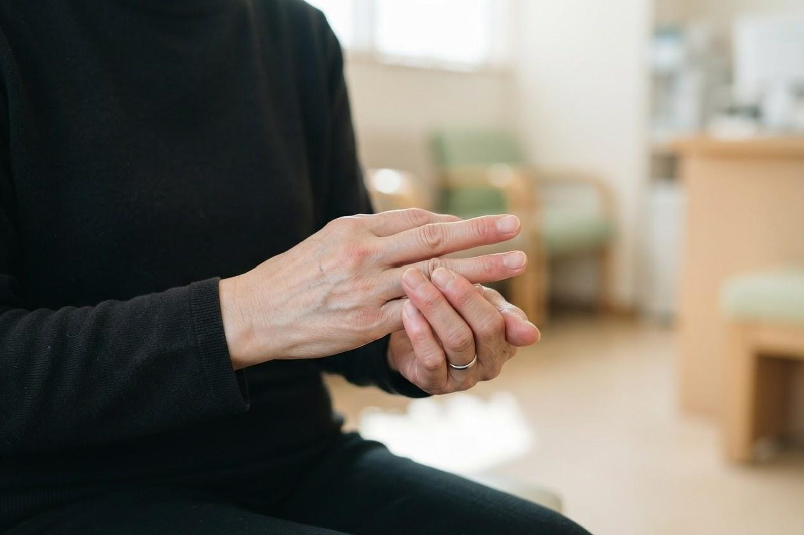

手足がしびれます。放っておいても大丈夫でしょうか？
A. 回答まず確認していただきたいのは、しびれが「片側だけ」に「突然」起こったかどうかです。片方の手足が急にしびれる、力が入らない、といった症状は脳卒中（脳梗塞・脳出血）の可能性があるとされており、この場合は様子を見ずに直ちに119番への救急要請をご検討ください。一方、しびれは脳以外にも原因が多く、首（頸椎）や腰椎の病気、手首で神経が圧迫される手根管症候群、糖尿病による神経障害、ビタミンB12の不足、足の動脈の血流低下（下肢閉塞性動脈疾患／LEAD）など、さまざまな背景が考えられています。正座の後のような一時的なしびれはご心配のないことが多いのですが、数日以上続く場合や少しずつ範囲が広がる場合は、自己判断で放置せず一度ご相談ください。当院は内科・循環器内科・リハビリテーション科として、しびれの背景にある全身の要因を確認し、必要に応じて専門の医療機関へおつなぎしています。

まず確認：脳卒中を疑うサイン（FAST）
脳卒中では、顔の片側や片方の手足が突然動かなくなり、同じ部位の感覚が鈍くなったりしびれたりすることがあるとされています。海外・国内で広く紹介されている「FAST」という覚え方が、気づきの手がかりになります。
| 頭文字 | 確認すること | 異常のサイン |
|---|---|---|
| F（Face／顔） | 「イー」と言って笑ってもらう | 顔の片側がゆがむ、口角が下がる |
| A（Arm／腕） | 両腕を前に上げて保ってもらう | 片腕が上がらない、すぐに下がってくる |
| S（Speech／言葉） | 短い文を復唱してもらう | ろれつが回らない、言葉が出ない、話が通じない |
| T（Time／時間） | ひとつでも当てはまれば | すぐ119番。症状が始まった時刻を必ず控える |
脳卒中は治療の開始が早いほど後遺症を軽くできる可能性があるとされ、時間との勝負になります。症状がいったん治まっても、脳の血管の異常が背景にある場合があるとされていますので、「治ったから大丈夫」と自己判断せず医療機関にご相談ください。
しびれの一般的な原因
しびれは神経のどこかに不調があるときのサインとされ、原因となりうる病気は多岐にわたります。代表的なものを挙げます。
- 脳の病気（脳梗塞・脳出血など）：片側の手足や顔にしびれ・脱力が突然現れることがあるとされ、最も緊急性が高いと考えられています。
- 頸椎（首）の病気：加齢による変化で首の神経が圧迫され、腕や手にしびれ・痛みが出たり、手先が不器用になったり、歩きにくくなったりする場合があるとされています。
- 腰椎（腰）の病気：腰の神経が圧迫されると、お尻から脚・足にかけてしびれや痛みが出ることがあります。しばらく歩くと脚がしびれ、休むとまた歩ける、という出方をすることもあるとされています。
- 手根管症候群：手首のトンネル部分で正中神経が圧迫され、親指から薬指にかけてしびれが出るとされています。明け方に強く、手を振ると軽くなることがあるのが特徴とされ、妊娠・出産期や更年期の女性に多いと報告されています。
- 糖尿病による神経障害：血糖の高い状態が続くと細い神経が傷み、足先など左右対称に、体の先のほうからじんじんするしびれが出ることがあるとされています。
- ビタミンB12などの不足：ビタミンB12や葉酸の不足は神経の働きに影響し、手足のしびれや歩行のふらつきにつながる場合があるとされています。胃の手術後、偏った食事、貧血のある方などで注意が必要とされます。
- 末梢動脈疾患（足の動脈の血流低下）：足の動脈が細くなると、歩くと脚が痛む・だるい・冷たい・しびれる、といった症状が出ることがあるとされています。喫煙・糖尿病・脂質異常症などが背景になりやすいと考えられています。
- そのほか：甲状腺の機能低下、腎臓の機能低下、帯状疱疹、アルコールの多飲、お薬の影響などが関係することもあります。
しびれ方から考えるヒント
しびれは「どこが・いつから・どんなふうに」しびれるかによって、想定される背景が変わるとされています。診断を決めるものではありませんが、受診の際にご自身の状況を整理する目安としてご覧ください。
| しびれ方 | 考えられやすい背景の例 | 目安 |
|---|---|---|
| 片側の手足に突然 | 脳の病気（脳梗塞・脳出血など） | 直ちに119番を検討 |
| 片方の腕・手に、首や肩の痛みを伴って | 頸椎の病気 | 早めに受診 |
| 片方のお尻〜脚に、腰痛を伴って | 腰椎の病気 | 早めに受診 |
| 手のひら側の親指〜薬指、明け方に強い | 手根管症候群 | 早めに受診 |
| 両足の先から左右対称に、じわじわと | 糖尿病の神経障害、ビタミン不足など | 早めに受診 |
| 歩くと脚がしびれ、休むと治まる | 腰椎の病気、末梢動脈疾患 | 早めに受診 |
受診の目安
しびれそのものの強さより、「いつから」「片側か両側か」「ほかにどんな症状があるか」が緊急性の手がかりになるとされています。
判断に迷われるときは、救急安心センター事業「＃7119」（岡山県内で利用できます）にご相談いただけます。総務省消防庁の「全国版救急受診アプリ（Q助）」も目安になります。
直ちに119番への救急要請をご検討ください
- 片側の手足に突然しびれが出た、または力が入らない（脳卒中の可能性があるとされています）
- 顔の片側がゆがむ、口角が下がる（FASTのF）
- 両腕を前に上げると片方だけ下がってくる（FASTのA）
- ろれつが回らない、言葉が出ない、話が通じない（FASTのS）
- これまで経験したことのない強い頭痛を伴う
- 物が二重に見える、視野の一部が見えない、意識がぼんやりする
ひとつでも突然現れた場合は、様子を見ずに119番へ。症状が始まった時刻を控えて救急隊・医療機関にお伝えください。ご自身での運転は避けてください。
早めの受診をおすすめします
- しびれが数日以上続いている、少しずつ範囲が広がっている
- 両足の先が左右対称にじんじんする、感覚が鈍い
- ボタンがかけにくい、箸が使いにくい、字が書きにくいなど手先が不器用になった
- 歩くと脚がしびれて休みたくなる（休むとまた歩ける）
- 足の冷えや色の変化、足の傷が治りにくい
- 糖尿病・脂質異常症・高血圧・腎臓病などの持病がある、喫煙している
- 健診で血糖・HbA1cや貧血の指摘を受けたことがある
- 胃の手術を受けたことがある、食事が偏っている、お酒の量が多い
こんな症状はありませんか？（当てはまる数を数えてみてください）
- しびれで夜中や明け方に目が覚める
- しびれている場所の感覚が鈍く、熱さや痛みを感じにくい
- 物を落としやすくなった、階段でつまずきやすくなった
- しびれと一緒に、首・肩・腰の痛みがある
- 足がつることが増えた、足の裏に紙が貼りついたような感じがある
- 血圧・血糖・コレステロールを指摘されたが、受診していない
ひとつでも当てはまり、症状が続いている場合は、一度ご相談ください。
当院での対応・検査
当院は内科・循環器内科・リハビリテーション科として、しびれの背景にある全身の要因を確認します。問診でしびれの部位・経過・出方をうかがったうえで、血圧測定、神経の簡単な診察（感覚・筋力・反射の確認）、血液検査（血糖・HbA1c、貧血、ビタミン、腎機能、甲状腺機能など）、必要に応じて心電図や足の血流の確認を行います。脳の病気が疑われる場合や、頸椎・腰椎の詳しい画像検査が必要と考えられる場合は、CT・MRIなどが可能な医療機関へ速やかにおつなぎします。
受診は予約制ではなく、当日そのままお越しいただけます。朝7時から診療しておりますので、出勤前の受診も可能です。診察と基本的な血液検査は当日中に行え、所要時間はおおむね30分〜1時間程度が目安です（混雑状況により前後します）。血液検査の詳しい結果は、項目によって後日のご説明となる場合があります。いずれも保険診療の対象となります。費用の詳しい目安はお電話にてお問い合わせください。
お持ちいただくもの：健康保険証またはマイナ保険証、お薬手帳（または服用中のお薬）、健診結果や他院の検査結果があればその写し。足のしびれでご相談の場合は、靴下を脱いで足を診察しますので、脱ぎ履きしやすい靴・靴下でお越しいただくとスムーズです。当院は無料駐車場を22台ご用意しています。
受診時に伝えていただきたいこと
しびれは目に見えない症状のため、ご本人の説明が診断の大きな手がかりになります。次の点をメモしてお持ちいただくと診療がスムーズです。
- いつから始まったか（突然か、いつのまにかか。何日前・何か月前か）
- 片側だけか、両側か（右手だけ／両足の先だけ、など）
- どの範囲か（指の何本目まで、足首から先、手袋・靴下をはいた形など。手や足の絵に印をつけてくるのも有効です）
- どんな感じか（じんじん、ぴりぴり、正座の後のよう、感覚が鈍い、力が入らない）
- どんなときに強くなるか（朝方、長く歩いた後、首や腰を反らせたとき、手を使った後など）
- 症状は良くなってきているか、悪くなってきているか、変わらないか
- ほかに気になる症状（痛み、筋力の低下、歩きにくさ、排尿の変化など）
- 持病、服用中のお薬、飲酒・喫煙の習慣、過去の手術（特に胃の手術）
参考にした情報
続く手足のしびれ、原因がはっきりしないしびれは、まずはお気軽にご相談ください。
最終更新：2026年8月26日